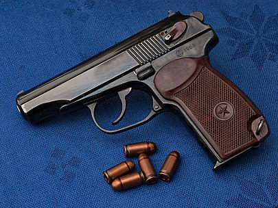

9-мм пистоле́т Мака́рова (ПМ, Индекс ГРАУ — 56-А-125) — советский самозарядный пистолет, разработанный
советским конструктором Николаем Фёдоровичем Макаровым в 1948 году. Принят на вооружение в 1951 году.
Является личным оружием нападения и защиты, предназначенным для поражения противника на коротких расстояниях,
в советских и постсоветских вооружённых силах и правоохранительных органах, а также одним из самых массовых
пистолетов в СССР и современной России.

История создания
В 1947–1948 годах в СССР проводился конкурс на новый компактный пистолет для старшего командного состава Советской
Армии. Пистолет ТТ и тем более револьвер системы Нагана считались уже устаревшими образцами. Кроме того, было
решено ввести в армии два пистолета: длинноствольный автоматический для линейных офицеров (им стал автоматический
пистолет Стечкина) и малогабаритный — для старших офицеров и как «оружие мирного времени». По условиям конкурса
требовалось создать пистолет со свободным затвором и самовзводным ударно-спусковым механизмом. В качестве отправной
точки конструкторам предлагался хорошо себя зарекомендовавший Walther PP, выпускавшийся с 1929 года. Первоначально
требовалось представить два образца — в калибрах 7,65 мм и 9 мм, позднее остановились на вновь созданном 9-мм патроне
9×18 мм ПМ, более мощном (энергия пули 300 Дж), чем патрон 9×17 мм, который использовался в «Вальтер ПП». Пуля такого
патрона обладает лучшим останавливающим действием, чем пуля патрона 7,62×25 мм ТТ, несмотря на меньшую мощность.
Умеренная мощность патрона позволяет использовать конструкцию с неподвижным стволом и свободным затвором.
Свои разработки на конкурс представили Ф. В. Токарев, С. Г. Симонов, С. А. Коровин, И. Я. Стечкин, К. А. Барышев,
П. В. Воеводин, И. И. Раков, А. А. Климов, Г. В. Севрюгин, А. И. Лобанов, Н. Ф. Макаров. Все конструкции по
размерам, компоновке и устройству были подобны немецкому прототипу. Вместе с советскими разработками также
испытывались по конкурсной программе Walther PP, Mauser HSc, Sauer 38H, Beretta M1934 и FN model 1910/22.
По совокупности характеристик победителем был признан пистолет Макарова, но было рекомендовано внести ряд
изменений в конструкцию. В 1951 г. пистолет Макарова под обозначением ПМ был принят на вооружение для армии
и правоохранительных органов.
Общая компоновка ПМ подобна пистолету «Вальтер ПП», однако Макаров существенно усовершенствовал базовую систему
«Вальтера» по нескольким направлениям:
- упрощение как собственно конструкции, так и обращения с пистолетом, его обслуживания;
- многофункциональность деталей;
- повышение надежности работы в экстремальных условиях эксплуатации;
- увеличение прочности деталей и служебного ресурса;
- повышение технологичности и темпов массового производства.
Устройство
Действие автоматики ПМ основано на свободном затворе. Запирание ствола происходит за счёт инертной массы затвора.
Упругость возвратной пружины, надетой на ствол, в самом запирании не участвует, она всего лишь возвращает затвор
в переднее положение. Ударно-спусковой механизм двойного действия с открытым курком. В ПМ применён свободный ударник,
не имеющий пружины, удерживающей его в заднем положении. Теоретически это может привести к самопроизвольному выстрелу
при падении пистолета с большой высоты, но Н. Ф. Макаров считал, что ударник не обладает достаточной массой, чтобы
всерьёз учитывать эту возможность.
Пистолет состоит из 32 деталей и следующих основных частей:
- рамка со стволом и спусковой скобой;
- затвор с ударником, выбрасывателем и предохранителем;
- магазин;
- возвратная пружина;
- ударно-спусковой механизм;
- рукоятка с винтом;
- затворная задержка;
После того, как вставлен магазин и дослан патрон в патронник, ПМ можно поставить на предохранитель. При этом
происходит безопасный спуск курка с боевого взвода, курок отходит от ударника и блокируется, спусковой крючок уходит
вперед и тоже блокируется. Блокируется также и затвор (в «Вальтер ПП» затвор не блокируется, и оружие можно перезаряжать
при включенном предохранителе). При включенном предохранителе ПМ готов к ношению.
Перед выстрелом флажок предохранителя, находящегося на левой стороне задней части затвора, нужно перевести в нижнее
положение в позицию «огонь» (более удобно, чем в «Вальтер ПП», где рычажок нужно переводить в верхнее положение).
Курок встанет на предохранительный взвод, и ПМ будет готов к выстрелу самовзводом. При первом нажатии на спусковой крючок
одновременно взводится курок, поэтому для спуска требуется большее усилие, чем при взведенном курке — около 3,5 кг. После
первого выстрела курок будет взведен (поставлен на боевой взвод), и для выстрела достаточно короткого легкого нажатия с
усилием около 1,5 кг.
После снятия с предохранителя курок можно взвести вручную, как в пистолетах с УСМ одинарного действия для более точного
первого выстрела. При взведении курка спусковой крючок отходит назад. Теперь первый выстрел можно произвести коротким нажатием.
Курок можно снять с боевого взвода, придерживая его большим пальцем и нажимая на спусковой крючок. После того как спусковой крючок
будет отпущен и уйдёт вперед, курок встанет на предохранительный взвод, предотвращающий контакт курка с ударником при неполном
взведении курка.
Гильза после выстрела выбрасывается вправо.
Стандартный магазин ПМ содержит 8 патронов. По израсходовании всех патронов затвор встает на затворную задержку. Снять затвор
с задержки можно при помощи рычажка слева на рамке. Если не вставлен пустой магазин, то снять затвор с задержки можно и другим
способом, оттянув его немного назад и отпустив. Если в пистолет вставлен снаряжённый магазин, то после снятия затвора с задержки
патрон досылается в патронник, и пистолет снова готов к выстрелу.
Защёлка магазина, как и у большинства европейских пистолетов того времени, расположена в основании рукоятки. Такое расположение
защёлки исключает случайное извлечение магазина, характерное для пистолета «ТТ», однако менее удобно для быстрой смены магазина.
Отличительные черты пистолета Макарова — простота конструкции и многофункциональность деталей. Так, затворная задержка служит
одновременно отражателем гильз. Двуперая пластинчатая боевая пружина служит одновременно пружиной рычага взвода и пружиной шептала,
а также пружиной отбоя курка (изгиб её широкого пера) при постановке на предохранительный взвод. Нижний конец пружины является
пружиной защёлки магазина.
Н. Ф. Макаров создал пистолет, конструкция которого содержит ряд оригинальных решений. Пистолет простой в эксплуатации, обладающий
большим служебным ресурсом и более надежный, чем взятый за основу Walther PP.
Некоторые детали, например, боевая пружина и, в особенности, предохранитель, имеют довольно сложную форму. Но в дальнейшем
изменение технологии позволило упростить и удешевить производство.